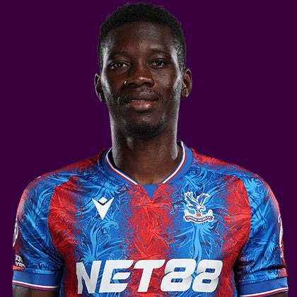

PITCHKEEP
Premier League ranks
Player File · MID CRY · Premier #35

Ismaïla Sarr
MID · Crystal Palace · age 28 · £6.2m
2025/26 Premier League
| Year | Starts | Min | G | A | xG | xA | CS | GC | Bonus | YC | Sleeper | FPL |
|---|---|---|---|---|---|---|---|---|---|---|---|---|
| 2025/26 | 0 | 15 | 0 | 0 | 0.0 | 0.01 | 0 | 0 | 0 | 0 | 0 | 2 |
FPL news
Injured - Groin injury - Expected back 29 Nov - Chance of playing: 0%
Plus
- Premier #35. Inside the first 50 of the 400-deep hybrid.
- Penalty order #3.
- Consensus 38.8 vs Sleeper #408 - the industry still believes more than 2025/26 counted.
Minus
- Injured; Groin injury - Expected back 29 Nov; 0% chance of playing.
- Board spread 18-408 (The Independent Watchlist to Sleeper BPL 2025).
PitchKeep Take · The Premier
Ismaïla Sarr is a midfielder for Crystal Palace, age 28, £6.2m. The Premier ranks him 35th overall by splitting Sleeper BPL 2025 (#408, 0.0 points) with the consensus of 5 other boards (38.8). The industry still has him 369 spots ahead of the 2025/26 Sleeper count. The Premier pays that reputation something, not everything. Brand does not outrun a down year, and a down year does not erase a player Crystal Palace still builds around.
The 2025/26 Premier League line is 0 starts and 15 minutes, 0 goals and 0 assists, 0 tackles and 0 CBI. Official FPL scored it at 2 points (1.0 per match). Sleeper's table turned the same counting stats into 0.0. Midfielders get 9 a goal, 6 an assist, and 1 a clean sheet, plus a full tackle/CBI stream. That is why a six who plays every week can outrank a ten-goal winger who sits.
Underlying: 0.0 xG, 0.01 xA, 0.01 xGI. Set pieces: penalty order #3 for Crystal Palace. Role at Crystal Palace is the 2026/27 question sitting under the 2025/26 number. 0 starts is a starter. Anything under 25 starts is a rotation warning we already priced. Minutes are the skill that survives a finishing regression. The friendliest board is The Independent Watchlist at 18; the coldest is Sleeper BPL 2025 at 408.
Market: £6.2m, 8 boards on the file. Price is the FPL tax, not the rank. The Premier is who produced and who the boards still believe. ICT 0.3.
Instruction: he is a starter in deep Sleeper and a squad/rotation piece in 10-team FPL. Pay Premier #35 money, not a leftover 2024 reputation, not waiver dust. FPL flag: injured; Groin injury - Expected back 29 Nov; 0% chance of playing. Nearby on The Premier: Elliot Anderson, Ryan Gravenberch, Mac Allister. Versus The Pitch (Sleeper-only #408), the hybrid moves him up to #35. That move is the third list doing its job.
He is 28, which on this board is neither a dart nor a warning label. Prime-age midfielders get ranked on what they just did and whether Crystal Palace still gives them the ball. 15 minutes says yes. The 2026/27 FPL price (£6.2m) is the app's guess at whether that continues. The Premier is the blend of that guess and the box score.
How to use the file: The Pitch is the Sleeper-only 400 (he is #408 there). The Premier is the 50/50 with every other board we track. Attack, Midfield, Defence, and Keepers re-rank the same Sleeper table by position. BK Value on this page follows The Premier when you are on the hybrid calculator and The Pitch when you are on the Sleeper calculator. Same curve either way - 12,000 at 1.01.
Board graph
Spread 18-408 · 8 sources
Tape · 2025/26 Premier League
Brighton vs Crystal Palace 0-1 Highlights & Ismaïla Sarr Goal | Premier League 2025/26
Every Board
Spread 18-408 · 8 sources
| Source | Rank |
|---|---|
| The Independent Watchlist | 18 |
| The Athletic PL 50 | 20 |
| RotoWire FPL 400 | 40 |
| RotoWire GW1 | 46 |
| FPL Price Board | 56 |
| RotoWire Fantrax / Sleeper 400 | 70 |
| FPL Ownership | 243 |
| Sleeper BPL 2025 | 408 |
All players · The Premier · The Pitch · PK News · Calculator